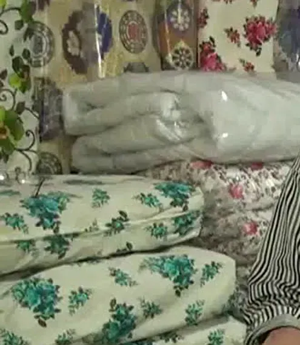

El dikimi yün yorgan
Ustanın elinden, yıkanmış ve atılmış yünle; saten ya da pamuklu yüzle dikilir.
3.500 TL'denDolgu: Yün
SeçeneklerRamazan Hoşlar mesleği, küçüklüğünden beri yorgancılık yapan babasının yanında öğrendi. Bugün Korkuteli'deki dükkânında yün ve pamuk yorgan dikiyor, çeyiz yorganına desen işliyor, anneden kalan yorganı yeniden kabartıyor.

Yorgan, yastık, döşek, örtü; elde dikilenler ve hazır ürünler. Fiyatlar internet piyasasına göre yazıldı, kesin fiyatı usta söyler.
Ustanın elinden, yıkanmış ve atılmış yünle; saten ya da pamuklu yüzle dikilir.
3.500 TL'denDolgu: Yün
SeçeneklerNefes alan, ter tutmayan pamuk dolgu; dükkânda serilip elde dikilir.
2.250 TL'denDolgu: Pamuk
SeçeneklerSilikonla kaplanmış boşluklu polyester elyaf: hafif, yıkanabilir, uygun fiyatlı.
1.100 TL'denDolgu: Silikon
SeçeneklerSaten yüz, göbek deseni, köşe süsü; isterseniz isim ya da tarih işlenir.
4.500 TL'denDolgu: Yün
SeçeneklerEn çok satılan yastık: yumuşak-orta dolgun, yıkanabilir.
300 TL'denDolgu: Silikon
SeçeneklerYün açılır, atılıp kabartılır, eksiği tamamlanır, yeni yüzle yeniden dikilir.
1.400 TL'denDolgu: Yün
SeçeneklerÜşüyor musunuz, terliyor musunuz, makinede yıkamak mı istiyorsunuz? Cevaplarınıza göre dolgu önerelim. Sonucu tek dokunuşla ustaya gönderebilirsiniz.
Bu öneri genel bir rehberdir; sağlıkla ilgili bir durumunuz varsa doktorunuzun önerisi önceliklidir.

Sıkışan yün atılır, topaklar dağıtılır, eksiği tamamlanır.
Saten ya da pamuklu yeni yüzle desen dikişi yeniden atılır.
Adet fazlaysa Korkuteli'de adresinizden alınır, teslim edilir.
Hangi dolgu neye iyi? Dükkânda en çok sorulan sorunun kısa cevabı.
| Özellik | Yün | Pamuk | Silikon | Elyaf | Kaz tüyü | Bambu karışım |
|---|---|---|---|---|---|---|
| Sıcaklık | ●●●●● | ●●●●○ | ●●●○○ | ●●○○○ | ●●●●● | ●●○○○ |
| Nefes / nem yönetimi | ●●●●● | ●●●●○ | ●●○○○ | ●●○○○ | ●●●●○ | ●●●●○ |
| Ağırlık | Ağır | Ağır | Hafif | Hafif | Çok hafif | Hafif |
| Yıkama | Yıkanmaz, havalandırılır | Yıkanmaz, kılıf yıkanır | Makinede 30–40 °C | Makinede 30 °C | Kuru temizleme / özel | Makinede 30 °C |
| Ömür | Çok uzun, kabartılarak yenilenir | Uzun, kabartılır | Orta, değiştirilir | Kısa-orta | Uzun (bakımlı) | Orta |
| Alerji notu | Bazı ciltlerde kaşıntı | Bitkisel lif | Hayvansal lif yok, sıcak yıkanabilir | Hayvansal lif yok | Tüy alerjisine uygun değil | Etikete bakın |
| Kimler için | Üşüyen, serin ev | Terleyen, doğal lif seven | Sık yıkama isteyen | Bütçe, misafir | Hafif ama sıcak isteyen | Sıcak oda, yaz |
Noktalar genel karşılaştırmadır; aynı dolguda gramaj ve kumaş sonucu değiştirir. Sağlık beyanı değildir.
“Normalde bu meslek de bitiyor, biz de farklı desenler üreterek canlanması için çalışıyoruz.”
Ramazan Hoşlar · Günhaber / DHA, 30 Nisan 2015
Fabrika yorganları çoğaldıkça yorgancı dükkânları birer birer kapandı. Ramazan usta ise müşteri isteğiyle yorganlara logo, isim ve farklı desenler işleyerek mesleği yaşatıyor.
Hakkımızda

Yün yorgan neden sıcak tutar ama terletmez? Nem, ısı dengesi ve uyku üzerine araştırmalar ne diyor; neyi bilmiyoruz?

Pamuk yastık neden serin tutar, ne kadar dayanır, kimler için doğru seçimdir? Silikon ve yünle dürüst bir karşılaştırma.

"Silikon" yorganın içinde silikon yok, silikonla kaplanmış elyaf var. Silikon ile düz elyaf arasındaki fark, kimlere uygun olduğu ve bakımı.
Sokak görünümünü parmağınızla çevirin. Dükkânın içinden 360° fotoğraf çok yakında burada.
Adres: Kiremitli Mah. 836 Sk., Belediye Cd. No:9/F, 07800 Korkuteli / Antalya
Cep / WhatsApp: 0532 726 24 12
Saatler: Gelmeden önce lütfen arayın.